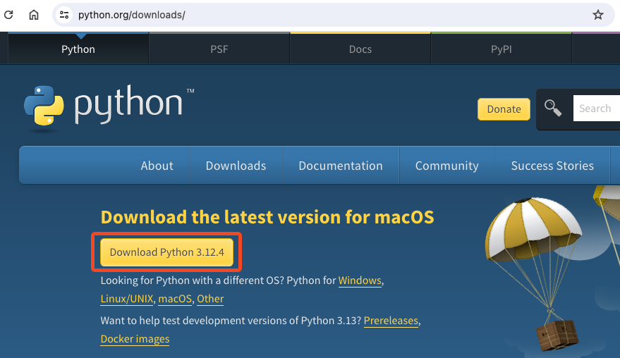
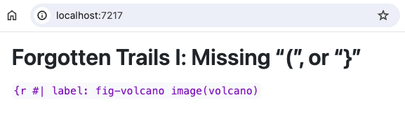
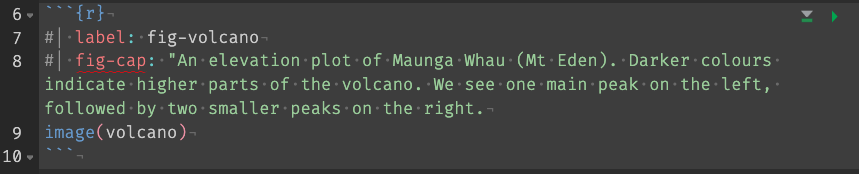
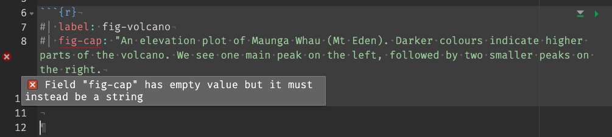
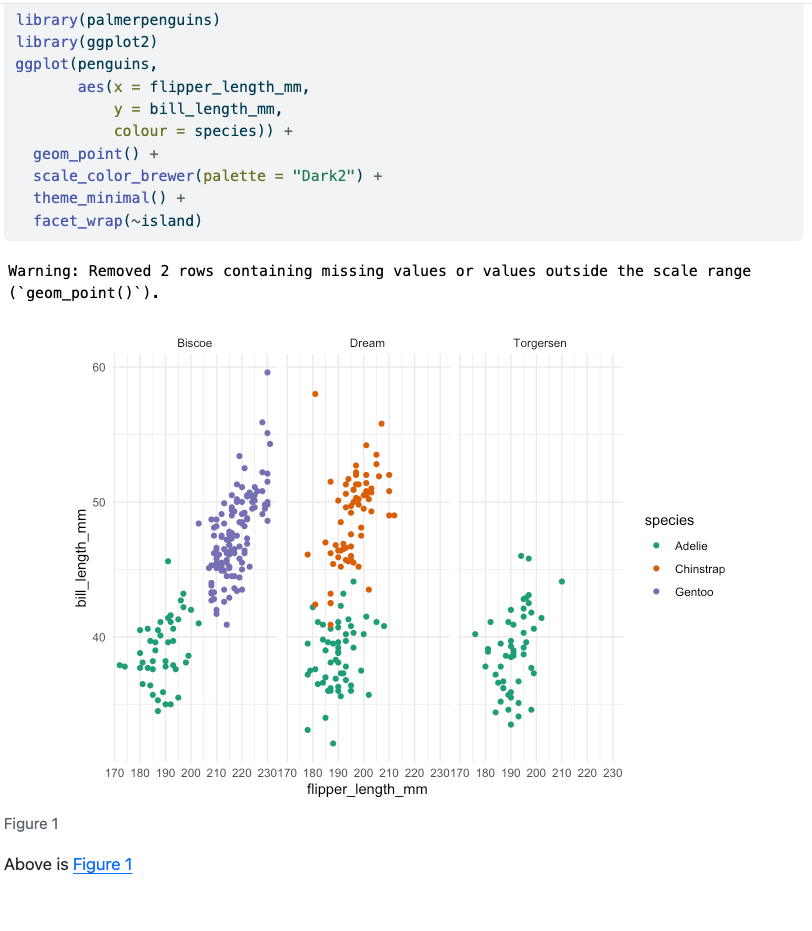
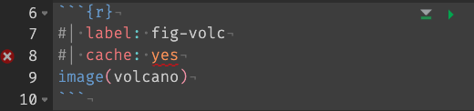
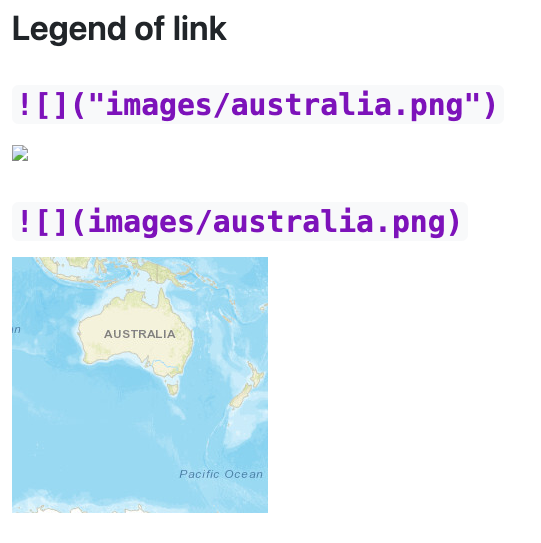

```{r}
#| label: repeated
1+1
```
```{r}
#| label: repeated
2+2
```15 Common Problems with Quarto (and some solutions)
There are some things that I run into fairly frequently (and some not so much) when I’m rendering my Quarto documents. This section details some the common problems, and the solution that I have found works for me.
If you want to practice on fixing broken Quarto documents, check out some pathologically broken examples on github at github.com/njtierney/qmd-errors.
15.1 Avoiding problems
To avoid problems in the first place, I try and do the following:
- Develop code in chunks and execute the chunks until they work, then move on.
- render the document regularly to check for errors.
Then, if there is an error:
- recreate the error in an interactive session:
- restart R
- run all chunks below
- find the chunk that did not work, fix until it does
- run all chunks below
- explore working directory issues
- remember that the Quarto directory is where the .qmd file lives
15.2 The errors
What follows from here are all the errors you might in an Quarto document, with the following structure:
- What they might look like
- What the error message might appear to be, and
- How to solve them
15.3 Python not found
An error like:
Error:
! /Library/Frameworks/Python.framework/Versions/3.7/lib/python3.7/config-3.7m-darwin/libpython3.7.dylib - dlopen(/Library/Frameworks/Python.framework/Versions/3.7/lib/python3.7/config-3.7m-darwin/libpython3.7.dylib, 0x000A): tried: '/Library/Frameworks/Python.framework/Versions/3.7/lib/python3.7/config-3.7m-darwin/libpython3.7.dylib' (mach-o file, but is an incompatible architecture (have 'x86_64', need 'arm64e' or 'arm64')), '/System/Volumes/Preboot/Cryptexes/OS/Library/Frameworks/Python.framework/Versions/3.7/lib/python3.7/config-3.7m-darwin/libpython3.7.dylib' (no such file), '/Library/Frameworks/Python.framework/Versions/3.7/lib/python3.7/config-3.7m-darwin/libpython3.7.dylib' (mach-o file, but is an incompatible architecture (have 'x86_64', need 'arm64e' or 'arm64')), '/Library/Frameworks/Python.framework/Versions/3.7/Python' (mach-o file, but is an incompatible architecture (have 'x86_64', need 'arm64e' or 'arm64')), '/System/Volumes/Preboot/Cryptexes/OS/Library/Frameworks/Python.framework/Versions/3.7/Python' (no such file), '/Library/Frameworks/Python.framework/Versions/3.7/Python' (mach-o file, but is an incompatible architecture (have 'x86_64', need 'arm64e' or 'arm64')), '/System/Library/Frameworks/Python.framework/Versions/3.7/Python' (no such file, not in dyld cache)
Backtrace:
1. global .main()
2. execute(...)
3. rmarkdown::render(...)
4. knitr::knit(knit_input, knit_output, envir = envir, quiet = quiet)
5. knitr:::process_file(text, output)
...
17. reticulate:::initialize_python()
18. base::tryCatch(...)
19. base (local) tryCatchList(expr, classes, parentenv, handlers)
20. base (local) tryCatchOne(expr, names, parentenv, handlers[[1L]])
21. value[[3L]](cond)This error went away when I installed python - I went to https://www.python.org/downloads/ and followed the prompts

15.4 No julia
Error in `loadNamespace()`:
! there is no package called 'JuliaCall'
Backtrace:
1. global .main()
14. base::loadNamespace(x)
15. base::withRestarts(stop(cond), retry_loadNamespace = function() NULL)
16. base (local) withOneRestart(expr, restarts[[1L]])
17. base (local) doWithOneRestart(return(expr), restart)Fix: Install JuliaCall R package:
install.packages("JuliaCall")15.5 “Duplication”: Duplicated chunk names
What it might look like
Chunks like this:
The error message
This is caught before the document compiles with a warning like:
processing file: duplicated-chunk-names.qmd
Error in parse_block(g[-1], g[1], params.src, markdown_mode) :
Duplicate chunk label 'repeated', which has been used for the chunk:
1+1
Calls: .main ... process_file -> split_file -> lapply -> FUN -> parse_block
Execution haltedThe important part to note is the start:
.
.
.
Duplicate chunk label 'repeated', which has been used for the chunk:
1+1
.
.
.How to solve
- In our case we have the same chunk name twice: ‘repeated’. Change the chunk name of one of them!
15.6 “Not what I ordered”: Objects not created in the right order
What it might look like
plot(my_table)
my_table <- table(mtcars$cyl)The error message
processing file: wrong-order.qmd
|...................................... | 67% [plot-table]Error:
! object 'my_table' not found
Backtrace:
1. base::plot(my_table)
Quitting from lines 8-12 [plot-table] (wrong-order.qmd)How to solve
There is a good clue at the end of this message here, stating:
.
.
Quitting from lines 8-12 [plot-table] (wrong-order.qmd)
.
.The template here is:
Quitting from lines START-END [CHUNK LABEL] (QUARTO-DOCUMENT-NAME.qmd)I would then navigate to those lines of code in the Quarto document, or search for the chunk label, and see if I can run that code interactively. A common problem with these kinds of errors is that they just might work interactively, because you might have run them out of sequence. However because a Quarto document goes from a fresh R session and runs the code from the top to the bottom in that order, the objects might not yet exist. So:
- Restart R - ensure it is a clean session without objects from the previous session hanging around
- Run code above the problem chunk
- Run code in the problem chunk
- Hopefully this reproduces your error
- If it doesn’t reproduce your error, consider trying to make a small reprex of the problem so you have try and figure out the bug.
15.7 Forgotten Trails I: Missing “(”, or “}”
What it might look like
```{r}
#| label: fig-volcano
#| eval: false
image(volcano
```The error message
processing file: forgotten-trails-i.qmd
|..................................... | 67% [fig-volcano]Error in `parse()`:
! <text>:2:0: unexpected end of input
1: image(volcano
^
Backtrace:
1. global .main()
2. execute(...)
3. rmarkdown::render(...)
4. knitr::knit(knit_input, knit_output, envir = envir, quiet = quiet)
5. knitr:::process_file(text, output)
...
11. knitr:::eng_r(options)
14. knitr (local) evaluate(...)
15. evaluate::evaluate(...)
17. evaluate:::parse_all.character(...)
18. base::parse(text = x, srcfile = src)
Quitting from lines 7-9 [fig-volcano] (forgotten-trails-i.qmd)
Execution haltedHow to solve
In this case the key part to look at is
|..................................... | 67% [fig-volcano]Error in `parse()`:
! <text>:2:0: unexpected end of input
1: image(volcano
^Here the error message even points to the image code, and the message, “unexpected end of input” is referring to the missing closing parenthesis.
What it might look like
```{r
#| label: fig-volcano
image(volcano)
```The error message
There is no error message here, but your output might look like this:

Forgotten Trails I: Missing “(”, or “}”
{r #| label: fig-volcano image(volcano)How to solve
The clue here for me is that we are getting this part of the code:
{r #| label: fig-volcano image(volcano)
When we would normally not see any information about the code chunk option, #| label.
When you come across some funky looking text like that, look for a missing }.
15.8 “Forgotten Trails II”: Chunk option with trailing “, or not input
What it might look like

The error message
ERROR: YAMLException: unexpected end of the stream within a double quoted scalar (forgotten-trails-ii.qmd, 8:188)
7: #| label: fig-volcano
8: #| fig-cap: "An elevation plot of Maunga Whau (Mt Eden). Darker colours indicate higher parts of the volcano. We see one main peak on the left, followed by two smaller peaks on the right.
~
9: image(volcano)How to solve it?
- The clue here is
unexpected end of the stream within a double quoted scalar. Which, although it might sound a bit obtuse, is referring to a missing quote. The other clue is that the error captures the code chunk information and prints it out to the console. - When you are working with this code in RStudio it also highlights the error:

15.9 “The Path Not Taken” File path incorrect
What it might look like
```{r}
#| label: read-data
#| echo: fenced
#| eval: false
library(readr)
penguins <- read_csv("the_penguins.csv")
```The error message
processing file: path-not-taken.qmd
|....................................... | 67% [read-data]Error:
! 'the_penguins.csv' does not exist in current working directory ('/Users/nick/github/njtierney/qmd-errors').
Backtrace:
1. readr::read_csv("the_penguins.csv")
4. vroom (local) `<fn>`("the_penguins.csv")
5. vroom:::check_path(path)
Quitting from lines 7-10 [read-data] (path-not-taken.qmd)
Execution haltedHow to solve
The key part to pay attention to here is:
Error:! 'the_penguins.csv' does not exist in current working directory ('/Users/nick/github/njtierney/qmd-errors').In this case, we need to ensure that the data file is in the right spot - in our example we have a typo - the data should be “data/penguins.csv”.
15.10 “Spolling I” Incorrectly spelled chunk options
These are often not an error, but you just won’t get the behaviour that you expect.
What it might look like
```{r}
#| label: fig-penguins
#| fig-caption: "Penguin Bill Length against Flipper Length. coloured by species. Each dot represents the bill length and flipper length of a penguin, coloured by species (Adelie, Chinstrap, Gentoo), and facetted by the three islands (Biscoe, Dream, Torgensen). We learn that not all three species are present on all islands, only Adelie is present on each. Adelie generally has the smallest flipper and bill length of the penguins, with chinstrap and gentoo being similar. Flipper length is correlated with bill length."
#| echo: fenced
library(palmerpenguins)
library(ggplot2)
ggplot(penguins,
aes(x = flipper_length_mm,
y = bill_length_mm,
colour = species)) +
geom_point() +
scale_color_brewer(palette = "Dark2") +
theme_minimal() +
facet_wrap(~island)
```Above we have @fig-counts...In this case we do not get a rendered caption at all:

The root cause of this is that we have specified fig-caption instead of fig-cap.
This once caused me to rewrite a lot of code and an entire section of a paper until I realised the problem.
The error message
There is no error message for this! It is a silent error.
How to solve
You can resolve this issue by using fig-cap instead of fig-caption.
15.11 “Spolling II” Incorrectly spelled chunk option inputs
So this is when you provide the wrong input to your chunk options. Like something that requires true gets “yes”, or something that needs "100%" instead gets 100
What it might look like

The error message
==> quarto preview spolling-ii.qmd --to html --no-watch-inputs --no-browse
(line 8, columns 11--14) Field "cache" has value yes, which must instead be `true` or `false`
✖ The value yes is a string.
ℹ The error happened in location cache.
ℹ Quarto uses YAML 1.2, which interprets booleans strictly.
ℹ Try using true instead.
ERROR: Validation of YAML cell metadata failed.
ERROR: Render failed due to invalid YAML.How to solve
There’s a bit of text here, but the key piece is:
(line 8, columns 11--14) Field "cache" has value yes, which must instead be `true` or `false`We have specified #| cache: yes instead of #| cache: true. A good thing to internalise here is that Quarto always uses lowercase true or false and never yes or no.
15.12 “The Legend of Link I”: Your images in  don’t work.
I often forget that it is , and not . There are no quote marks!

15.13 LaTeX errors
There is no panacea for LaTeX errors, but if you aren’t familiar with “what that error message” might look like, here are some details.
What it might look like
The error message
How to solve
15.14 I want to include inline R code verbatim to show an example
… Like for a book on using Quarto or something.
You can use the chunk option echo: fenced. See the Quarto documentation on fenced echo for more details.
Tip
Back before we had this option we used to have to do things like this:
blog post by T. Hovorka from R Views
It boils down to this:
r "\u0060r expression\u0060" .
Thankfully the folks at Quarto have made this much easier!
15.15 My Figure or Table isn’t being cited
What it might look like
You create a figure,
The error message
There isn’t one - you just get @fig-chunk-name printed.
How to solve
You need to make sure that you actually print the table or plot. If you create the plot and save it, but do not print it in the document, then you will not be able to reference the plot or table.
16 ::: {.cell} appears in my quarto document
16.1 Your Turn
- Go to this repo njtierney/qmd-errors, and give debugging some of these common Quarto errors a go.
You can download this repository by running this code:
usethis::use_course("njtierney/qmd-errors")